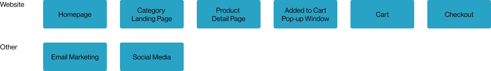
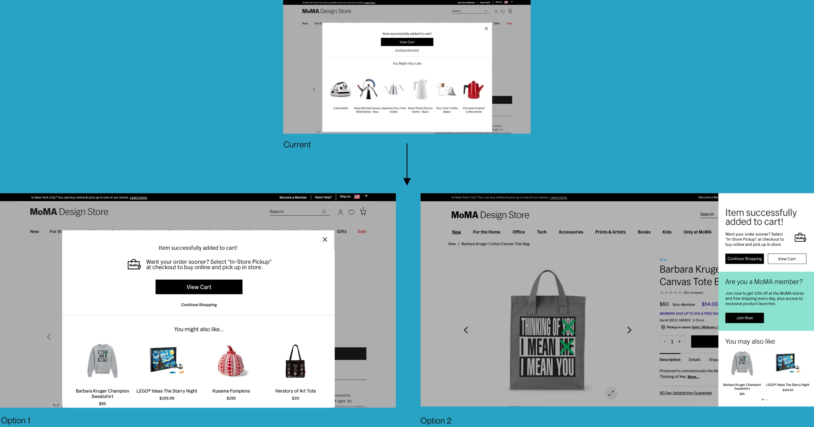
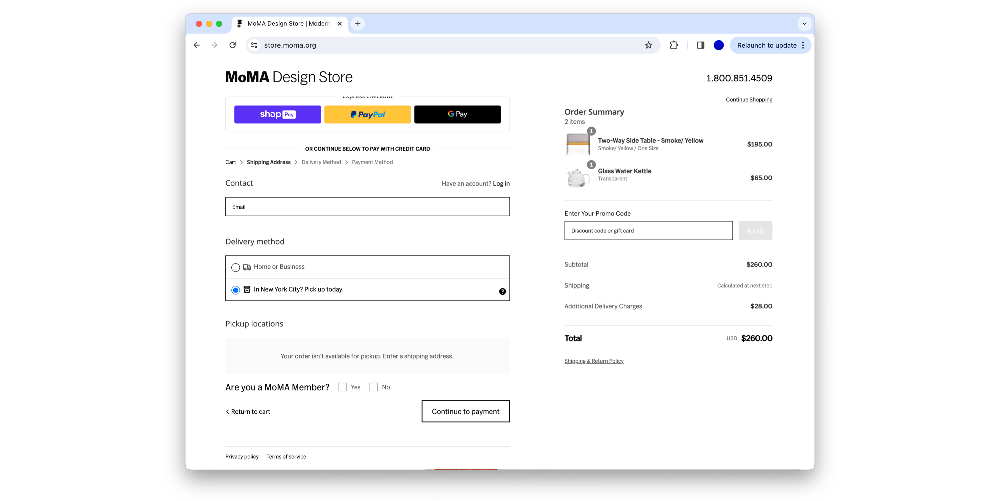

MoMA Design Store Rewards
We designed a seamless and captivating journey at MoMA Design Store, skillfully blending the digital and physical shopping experiences to enrich user engagement and increase customer return and transaction rates.
Category
Service Design · UIUX
Service Design · UIUX
Timeline
05.2022-08.2022
05.2022-08.2022
Role
Digital Design Manager
Digital Design Manager

Problems
High shipping cost: Shipping costs are a significant burden for retailers like MoMA Design Store, relying on direct-to-customer methods. This reliance strains our shipping infrastructure, often leading to higher costs and possible delivery delays, highlighting the need for efficient shipping strategies to satisfy customers and maintain operational efficiency.
Online-Offline Experience Gap: We faced a notable disconnect in bridging our customers' online and physical shopping experiences. This gap has lead to difficulties for our customers who seek the convenience and immediacy.
Online-Offline Experience Gap: We faced a notable disconnect in bridging our customers' online and physical shopping experiences. This gap has lead to difficulties for our customers who seek the convenience and immediacy.
· Research ·
Strategies Used By Competitors
To minimize shipping costs and enhance the integration of online and offline shopping experiences, retailers can adopt several strategies.
#1 Optimize Supply Chain and Logistics:
Streamlining the supply chain, including optimizing inventory management, negotiating better shipping rates, and using data analytics for demand forecasting, can significantly cut costs.
Streamlining the supply chain, including optimizing inventory management, negotiating better shipping rates, and using data analytics for demand forecasting, can significantly cut costs.
#2 Leverage Store Inventory for Online Orders:
Leveraging physical store inventory to fulfill online orders reduces travel distance for products, thus saving on shipping expenses and time.
Leveraging physical store inventory to fulfill online orders reduces travel distance for products, thus saving on shipping expenses and time.
#3 Offer BOPIS:
By allowing customers to order online and pick up in-store, retailers can reduce shipping costs and bridge the gap between online and physical shopping experiences.
By allowing customers to order online and pick up in-store, retailers can reduce shipping costs and bridge the gap between online and physical shopping experiences.
#4 Offer BOSHIP:
Similar to BOPIS, BOSHIP involves shipping online orders to a local store for pickup, reducing logistics costs associated with home delivery.
Similar to BOPIS, BOSHIP involves shipping online orders to a local store for pickup, reducing logistics costs associated with home delivery.
#5 Use Data Analytics for Efficient Routing:
Utilizing data analytics for efficient routing optimizes shipping routes and regional warehousing, lowering both costs and delivery times.
Utilizing data analytics for efficient routing optimizes shipping routes and regional warehousing, lowering both costs and delivery times.
#6 Encourage In-Store Returns:
For online purchases, encourage customers to return items to the store. This can drive foot traffic while saving on return shipping costs.
For online purchases, encourage customers to return items to the store. This can drive foot traffic while saving on return shipping costs.
· Our Approach ·
Our Solution
Considering the capacity of our team and the distinct nature of our clientele, many of whom are short-term museum visitors, we chose to implement the BOPIS (Buy Online, Pick Up in Store) service. This decision was tailored to our unique customer base and operational capabilities.
Following the launch of BOPIS, we can be poised to develop and introduce the BOSHIP (Buy Online, Ship to Store) service, applying the valuable insights and experiences gained from our BOPIS implementation.
Following the launch of BOPIS, we can be poised to develop and introduce the BOSHIP (Buy Online, Ship to Store) service, applying the valuable insights and experiences gained from our BOPIS implementation.

Digital Touchpoints
As the digital design manager, I identified and charted all the digital touchpoints available, enabling me to closely examine and incorporate content specifically for the BOPIS (Buy Online, Pick Up in Store) service. My wonderful colleagues managed the store and logistics aspects, which I will not be detailing here.

· Design Process Example·
Add to Cart Pop-up Window
To give an insight into this project, here's a glimpse of the overall work. I explored various ways to integrate BOPIS (Buy Online, Pick Up in Store) related information into the 'Add to Cart' pop-up window.

For option 1, I proposed adding a text section and a program icon to inform customers that the item they've added to their cart is available for
BOPIS. This update is beneficial as it requires minimal effort from the development team. However, it results in considerable unused white space on both the left and right sides of the pop-up window.
I implemented additional changes for option 2, involving both content addition and alterations to the structure of the pop-up window. Contrary to option 1, this approach makes better use of space, allowing us to mention BOPIS along with other services, and highlighting all call to actions. However, it does necessitate more extensive development efforts.
· Other Key Outcome ·
Homepage
The best place to feature the service is the global navigation, as we want to save the banners for product features. The global nav will dynamically target customers by geo-location – only customers within 20 miles of Manhattan will see this banner.
Category Landing Page
As more than 95% of our customers land on a product category page while visiting our site, adding the service to the filter column makes it prominent. An in-grid content block stands up from the products populated on the category page, making a stronger customer impression.
Cart
Although we want to surface BOPIS on the Cart page, it is not the priority. I proposed adding it to the bottom right module, where we highlight our services and programs.
Email & Social
I also designed the launch email and social media content to promote the service on other digital channels. Although these are not direct sales drivers, they are potential conversion drivers. It is essential to educate our customers and raise awareness.
Lesson Learned
The success of this project heavily relies on technical bandwidth, which is a crucial factor. This refers to the availability and capacity of our technical resources and infrastructure to handle the demands of the project. It encompasses aspects such as the adequacy of hardware and software, the expertise and availability of technical staff, and the overall technological capability of our organization to support and execute the project efficiently.
One area for potential improvement by the team in the future is the checkout process. Currently, our customers face a limitation where they cannot complete a checkout if the items in their cart are to be picked up from different locations, due to technical difficulties. This necessitates placing separate orders for each location. Moreover, customers are not informed of this until a mere 5 seconds before entering their payment details, leading to a less-than-ideal shopping experience. Addressing this issue could significantly enhance customer satisfaction and streamline the purchasing process.

One area for potential improvement by the team in the future is the checkout process. Currently, our customers face a limitation where they cannot complete a checkout if the items in their cart are to be picked up from different locations, due to technical difficulties. This necessitates placing separate orders for each location. Moreover, customers are not informed of this until a mere 5 seconds before entering their payment details, leading to a less-than-ideal shopping experience. Addressing this issue could significantly enhance customer satisfaction and streamline the purchasing process.